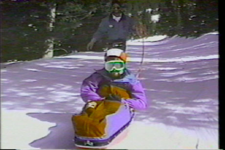
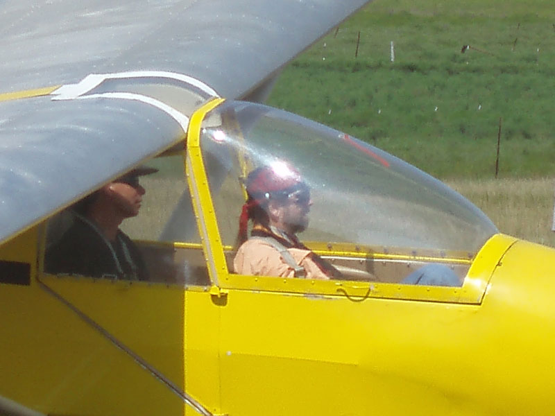
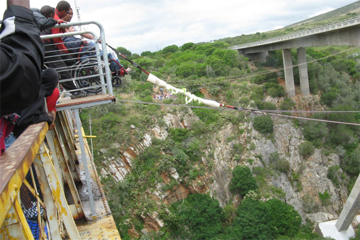

Welcome to Geno's Place
About Me
- I am Gene Rodgers
- I have traveled in 44 countries and island nations, on six continents, and sailed on several oceans.
- I have enjoyed diverse recreational activities ranging from skydiving and paragliding to scuba diving to trekking in the Himalayas - including an expedition to Mount Everest Base Camp.
- I was, at one time, an entrepreneur and self-made millionaire.
- I earned a bachelors degree in Education, an MBA, and graduate and post-graduate studies in rehabilitation.
- I have worked in the field of disabilities, in Texas, New Mexico, and California.
- I earned a Switzer Research Fellowship from the Federal Department of Education.
- I became, and am now, a TV producer.
Adventure Sports
I have enjoyed many adventure sports on land, sea and in the air. My favorite adventure sports are sailing and paragliding as they offer great freedom for those who understand the winds and ways of Mother Nature. Scuba diving required the most training. Trekking to Mount Everest Base Camp required the most endurance.
-

-

Geno Travels the World
I have traveled in 44 countries on six continents using planes, trains, automobiles, elephant and Sherpa. I have sailed on several oceans on tall-ships, an experimental air-foil ship, and even a Chines Junk. As a result of my travels, I have created the Ideal Travel Chair that works well under all conditions. Take a look and tell me what you think.
Though I have traveled in every country in North America and Central America, I have almost no pictures from those travels. Back then, rather than spend money on a camera and film, every dollar went for gasoline.
-

-

-